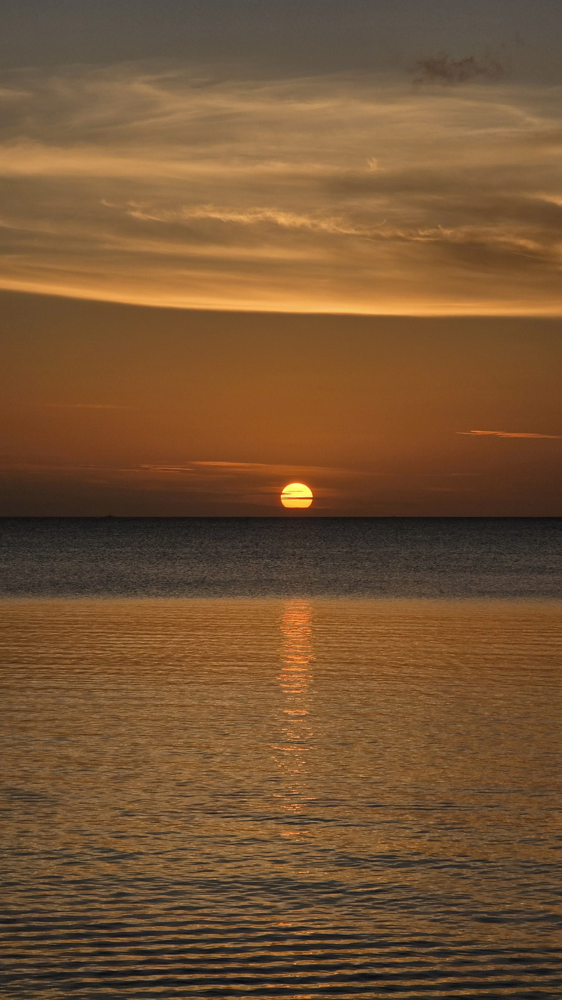

29 November 1605 — 2026
Selamat Hari Jadi
ke-421
Kabupaten
Kepulauan Selayar
Kepulauan Selayar
Tema
“Pangan Lokal Mendukung
Ketahanan Pangan Nasional”
Ketahanan Pangan Nasional”
Selayar bukan sekadar tujuan wisata, ia adalah tempat di mana senja terasa lebih jujur.
#sunarisunsetmoment · #HariJadiSelayar421